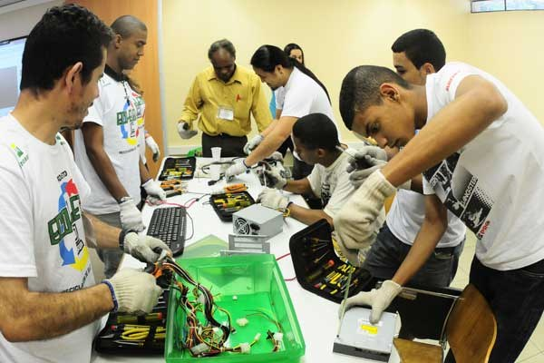
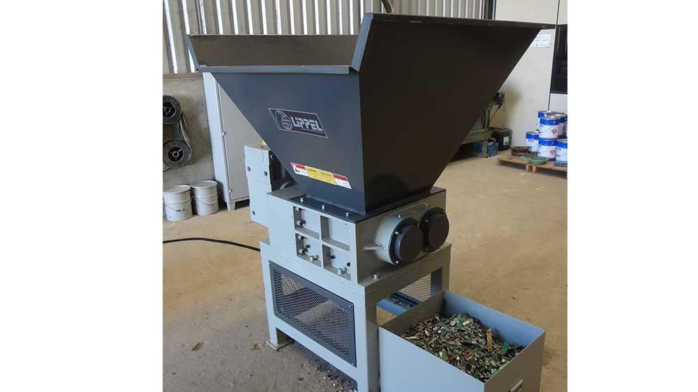
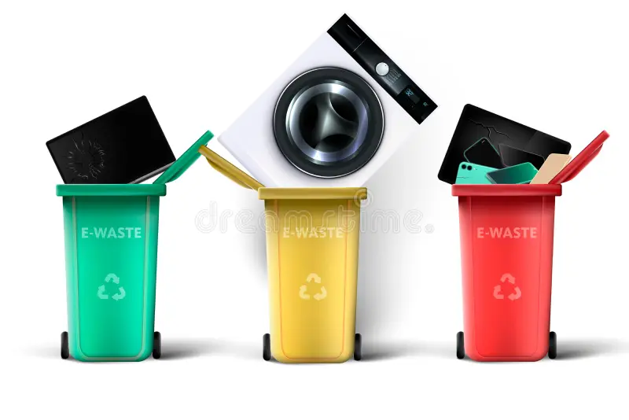
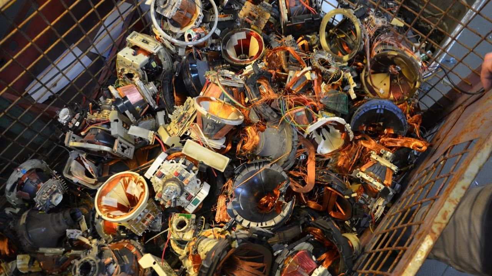
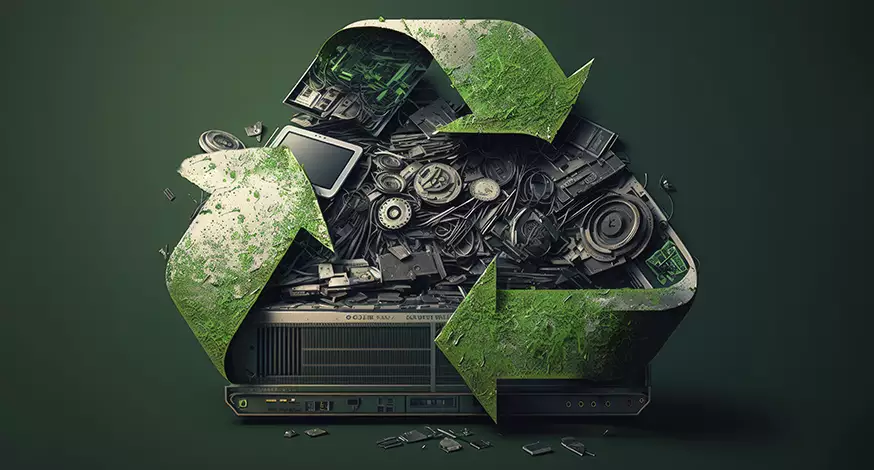

1. Coleta
1.1 Coleta Inicial: Os resíduos eletroeletrônicos são coletados de consumidores, empresas e pontos de descarte específicos, como postos de coleta ou centros de reciclagem. Isso pode incluir computadores, celulares, televisores, eletrodomésticos, baterias, entre outros.
1.2 Armazenamento Seguro: Os resíduos coletados são armazenados de maneira segura para evitar danos físicos e vazamentos de substâncias perigosas durante o transporte para instalações de reciclagem.
2. Triagem e Preparação
2.1 Triagem Inicial: Na instalação de reciclagem, os resíduos são triados para separar os equipamentos que podem ser reutilizados ou precisam de tratamento especial devido à presença de substâncias tóxicas.
2.2 Desmontagem: Os dispositivos eletrônicos são desmontados manualmente ou por máquinas automatizadas. Isso envolve a remoção de baterias, placas de circuito, cabos, componentes de plástico, metais, entre outros.
3. Trituração
3.1 Processo de Trituração: Após a desmontagem, os componentes são triturados em pedaços menores por meio de trituradores industriais. Isso facilita o processamento subsequente e a separação dos materiais.
4. Separação dos Materiais
4.1 Separação Mecânica: Os materiais triturados são submetidos a processos de separação mecânica, onde são separados com base em diferentes características físicas, como tamanho, densidade e propriedades magnéticas.
4.2 Separação Magnética: Ímãs são usados para separar metais ferrosos (como ferro e aço) dos não ferrosos.
4.3 Peneiramento e Classificação: Telas e peneiras são usadas para separar materiais com base no tamanho das partículas.
4.4 Flotação: Processo usado para separar plásticos e resinas de metais.
5. Processamento e Refino
5.1 Refino de Metais: Os metais recuperados, como ouro, prata, cobre, alumínio e outros metais preciosos, passam por processos de refino para purificar os materiais.
5.2 Reciclagem de Plásticos e Outros Materiais: Plásticos e outros materiais recicláveis são processados para serem reutilizados na fabricação de novos produtos. Isso pode envolver a fusão do plástico em pellets para serem moldados novamente.
6. Reutilização dos Materiais Reciclados
6.1 Fabricação de Novos Produtos: Os materiais reciclados são vendidos para fabricantes que os utilizam na produção de novos produtos eletrônicos, componentes industriais, embalagens, entre outros.
6.2 Mercado de Materias-Primas Secundárias: Alguns materiais reciclados, como metais preciosos, têm um valor significativo no mercado de commodities, incentivando a reciclagem como uma atividade econômica sustentável.
